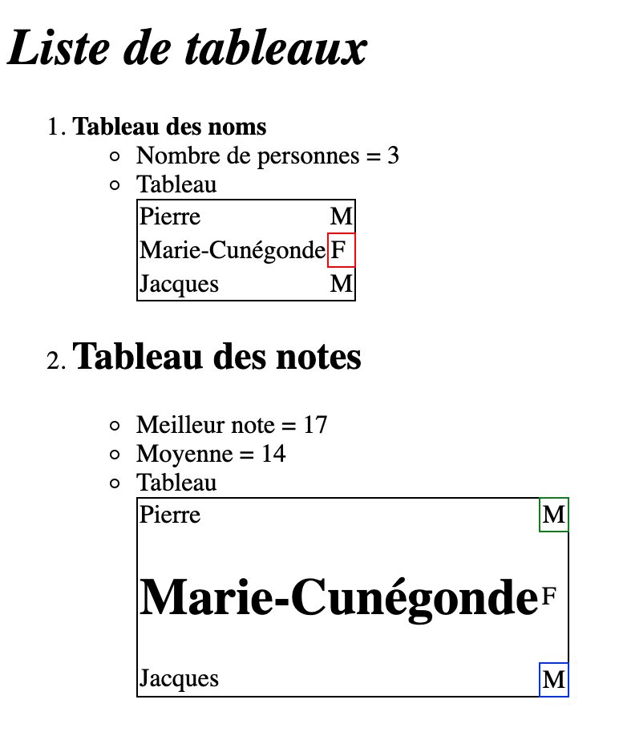
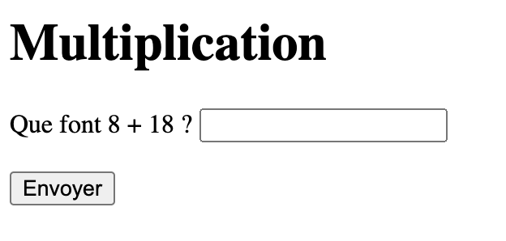

Les formulaires HTML sont un des principaux moyens d'interaction entre un utilisateur et un site web.
Ils permettent à l'utilisateur d'envoyer des données au site web.
La plupart du temps, ces données sont envoyées à des serveurs web mais la page peut aussi les intercepter et les utiliser elle-même.
Un formulaire HTML est composé d'un ou plusieurs « widgets ».
Ceux-ci peuvent être des zones de texte (sur une seule ligne ou plusieurs lignes),
des boîtes à sélection, des boutons,
des cases à cocher ou des boutons radio. La plupart du temps, ces items sont associés à un texte qui décrit leur rôle.
Un tableau est un ensemble structuré de données (table de données) présentées en lignes et colonnes.
Un tableau vous permet de retrouver rapidement et facilement des valeurs au croisement entre différents types de données.
L'avantage du tableau tient dans sa rigueur.
L'information est facilement interprétée par des éléments visuels entre les en‑têtes de lignes et colonnes.
Pour essayez, vous pouvez copier/coller ce code pour expérimenter les tableaux et les formulaires.
(Vous devez néanmoins, récupérer la base HTML dans le précédent chapitre pour vous exercer un peu).
<!-- On créé un tableau HTML avec des attributs CSS pour modifier légèrement son apparence -->
<table style="border-collapse: collapse; border: 1px solid black;">
<!-- On créé une entrée dans le tableau (ce qui veut dire une colonne et une ligne) -->
<tr>
<!-- Contenu de l'entrée numéro 1 -->
<td>Entrée 1A</td>
<!-- Contenu de l'entrée numéro 2 -->
<td>Entrée 1B</td>
</tr>
<!-- Deuxième entrée -->
<tr>
<td>Texte</td>
<!-- Cette case sera encadrée en rouge pour attirer l'attention de l'utilisateur -->
<td style="border: 1px solid red;">Mot encadré en rouge avec du CSS</td>
</tr>
<!-- Troisième entrée -->
<tr>
<td>HTML</td>
<td>PHP</td>
</tr>
<!-- Fin du tableau -->
</table>
<!-- On créé un formulaire en spécifiant le fichier cible et la méthode d'envoi des données -->
<form action="file.php" method="GET">
<!-- Il est possible d'insérer du texte pour décrire ce qu'on attend de l'utilisateur -->
Que font 8 + 18 ?
<!-- On peut insérer un champ de saisie pour que l'utilisateur puisse envoyer quelque chose -->
<input type="text" name="result" />
<br /><br />
<!-- Après que les éléments ont été créés, alors on affiche un bouton pour valider les données -->
<input type="submit" value="Envoyer">
<!-- Il est possible d'envoyer des valeurs cachées côté serveur (notamment utile pour récupérer certaines informations du client) -->
<input type="hidden" name="hiddenValue1" value="Test1">
<input type="hidden" name="hiddenValue2" value="Test2">
</form>


Images représentant un exemple de tableau à plusieurs entrées et un formulaire avec interaction PHP.